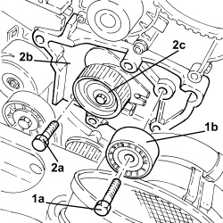
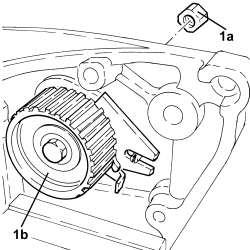
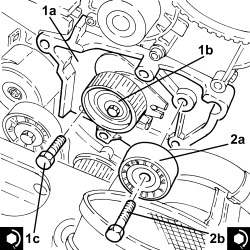

1032C42 TIMING BELT TENSIONER SUPPORT - R.R
- Path
- Procedures > 10 ENGINE > 1032 TIMING SYSTEM > 1032C TIMING SYSTEM TENSIONERS > 1032C42 TIMING BELT TENSIONER SUPPORT - R.R
- Kind
- repair procedure (removal / refitting; the operation number is the code)
- Applies to
- engines: 1.9 JTD 8v, 1.9 JTD 16v, 2.4 JTD 20v; all production periods
- Interactive page
- https://sloeber94.github.io/elrnDB-fCrm/en/#/194002146
Applies to: engines: 1.9 JTD 8v, 1.9 JTD 16v; all production periods
 Removing
Removing
 Refitting
RefittingOp. 1016A10 SOUND-PROOFING COVER - R.R
Op. 1048A50 TURBOCHARGER AIR INTAKE PIPE - R.R.
Op. 1084A16 OIL DIPSTICK PIPE - R.R
Op. 4450B04 RIGHT FRONT WHEEL - R.R
Op. 7055B66 ENGINE COMPARTMENT DUST COVER IN RIGHT FRONT WHEEL ARCH - R.R.
Op. 7055B91 RIGHT FRONT WHEEL ARCH LINER - R.R.
Op. 4410D16 BRACKET (ONE) RETAINING CHASSIS TO BODY - R R
Op. 1092G10 SINGLE ENGINE BELT - R.R
Op. 1092A10 CRANKSHAFT PULLEY - R + R
Op. 1032B10 TOOTHED TIMING BELT - R + R FOR TIMING ADJUSTMENT OR REPLACEMENT
1. Undo the bolt (1a) and remove the fixed timing belt tensioner (1b).
2. Undo the bolt (2a) and remove the timing belt tensioners support (2b) complete with timing belt moving tensioner (2c).

Applies to: engines: 1.9 JTD 8v, 1.9 JTD 16v; all production periods
1. Working at the bench, undo the bolt (1a) and separate the timing belt moving tensioner (1b) from the timing tensioner support.

Applies to: engines: 1.9 JTD 8v, 1.9 JTD 16v; all production periods
Refitting
Removing- Assemble the timing belt moving tensioner and the timing moving tensioner support and secure it without tightening the bolt.
1. Place the timing tensioner support (1a) complete with moving timing tensioner (1b) in its housing and fasten it by tightening the bolt (1c) to the recommended torque.
Component | Fastening | dia | Value (daNm) | Validity |
|---|---|---|---|---|
Timing tensioners support | Bolt | M10x1.25 | (engine crankcase side) 4.5 - 5.5 | 1.9 JTD 16v 1.9 JTD 8v |
2. Position the fixed timing belt tensioner (2a) in its housing and secure it tightening the bolt (2b) to the recommended torque.
Component | Fastening | dia | Value (daNm) | Validity |
|---|---|---|---|---|
Timing fixed tensioner | Bolt | M10 | (engine crankcase side) 4.5 - 5.5 | 1.9 JTD 16v 1.9 JTD 8v |

Applies to: engines: 1.9 JTD 8v, 1.9 JTD 16v; all production periods
Op. 1032B10 TOOTHED TIMING BELT - R + R FOR TIMING ADJUSTMENT OR REPLACEMENT
Op. 1092A10 CRANKSHAFT PULLEY - R + R
Op. 1092G10 SINGLE ENGINE BELT - R.R
Op. 4410D16 BRACKET (ONE) RETAINING CHASSIS TO BODY - R R
Op. 7055B91 RIGHT FRONT WHEEL ARCH LINER - R.R.
Op. 7055B66 ENGINE COMPARTMENT DUST COVER IN RIGHT FRONT WHEEL ARCH - R.R.
Op. 4450B04 RIGHT FRONT WHEEL - R.R
Op. 1084A16 OIL DIPSTICK PIPE - R.R
Applies to: engines: 2.4 JTD 20v; all production periods
- On this version it is not possible to remove/refit the mobile timing belt tensioner support on the car.
- To perform this operation, remove/refit the power unit
Op. 1004B14 POWER UNIT WITH AUTOMATIC TRANSMISSION R + R
and then work at the bench, customising the engine service procedures for this operation.
Topics linked from this page (11)
- 1004B14 POWER UNIT WITH AUTOMATIC TRANSMISSION R + R
- 1016A10 SOUND-PROOFING COVER - R.R
- 1032B10 TOOTHED TIMING BELT - R + R FOR TIMING ADJUSTMENT OR REPLACEMENT
- 1048A50 TURBOCHARGER AIR INTAKE PIPE - R.R.
- 1084A16 OIL DIPSTICK PIPE - R.R
- 1092A10 CRANKSHAFT PULLEY - R + R
- 1092G10 SINGLE ENGINE BELT - R.R
- 4410D16 BRACKET (ONE) RETAINING CHASSIS TO BODY - R R
- 4450B04 RIGHT FRONT WHEEL - R.R
- 7055B66 ENGINE COMPARTMENT DUST COVER IN RIGHT FRONT WHEEL ARCH - R.R.
- 7055B91 RIGHT FRONT WHEEL ARCH LINER - R.R.